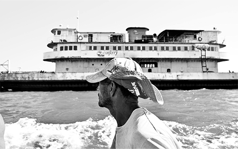
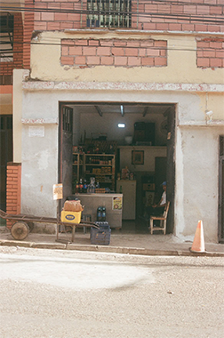

Home · Desktop · 1440


“En la vorágine de la rutina en el exilio buscamos la manera de ayudar, de agruparnos y compartir esto que sentimos en el pecho, de mirar a los ojos a quienes comparten un dolor que no se puede describir en palabras y que tratamos de codificar en una imagen, un retrato. En momentos como estos entendemos la importancia de la fotografía, y de nuestra labor como fotograf@s”.Post del 31.07.2026
La próxima edición se arma con quienes se postulan: fotógraf@s, film, música y manos para el equipo.
Si querés fotear, exponer o dar una mano, dejanos tus datos.
Cada edición recauda fondos para las víctimas de los terremotos en Venezuela.
[LINK MERCADO PAGO]Copias de la obra expuesta en cada edición. Lo recaudado va a la causa.
[LINK COPIAS EN VENTA]Sumate al equipo de la próxima edición o compartí la convocatoria. Escribinos por Instagram.
@seresmigratoriosHome · Mobile · 390
“En la vorágine de la rutina en el exilio buscamos la manera de ayudar, de agruparnos y compartir esto que sentimos en el pecho, de mirar a los ojos a quienes comparten un dolor que no se puede describir en palabras y que tratamos de codificar en una imagen, un retrato. En momentos como estos entendemos la importancia de la fotografía, y de nuestra labor como fotograf@s”.Post del 31.07.2026
La próxima edición se arma con quienes se postulan: fotógraf@s, film, música y manos para el equipo. Si querés fotear, exponer o dar una mano, dejanos tus datos.
Cada edición recauda fondos para las víctimas de los terremotos en Venezuela.
[LINK MERCADO PAGO]Copias de la obra expuesta en cada edición. Lo recaudado va a la causa.
[LINK COPIAS EN VENTA]Sumate al equipo de la próxima edición o compartí la convocatoria. Escribinos por Instagram.
@seresmigratoriosHome · Mobile · Menú abierto